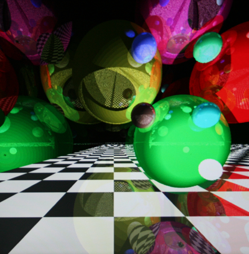

|
FPGA Ray Tracer |
Our final project in ECE576 was implementing a ray tracer capable of rendering, rotating, and moving spheres. Our initial goal was to realistically render and shade spheres with reflections while being able to navigate through the scene and allow the spheres to bounce and roll around. Once we met this goal, we added anti-aliasing and the ability to render planes as well. Because spheres are particularly hard to draw accurately with non-ray tracing 3-D accelerators and spheres can be used as bounding objects for polygon tracing, we chose to implement spheres first. Planes were added because they can be used as polygons to render more complicated objects with sufficient bounding. We used a NIOSII processor to update the sphere table in hardware so that we could rotate spheres about any axis and have them move without adding significant complexity to the hardware. Rotations and motion were done in floating point on the CPU, making the calculations more accurate than the 24bit 12.12 fixed point representation used in the hardware. All input switches and keys were used to allow motion of the light source, motion of the origin, rotation of the scene, selection of the resolution, selection of the scene if the CPU was not used, the level of reflections, the level of anti-aliasing, reset, the option render planes, and finally telescoping/widening the camera.  |